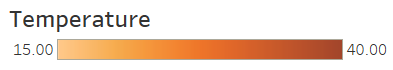

Bushfire points and Temperature
• Usage:
(1)Drag the Slider, the map will show a map combined choropleth with bushfire points.
(2) Click the refresh after each drag, in order to show the new data.
• Explanation:
(1) The choropleth map shows the temperature in each state.
(2) Each point means 20 bushfire points in that area.
(1)Drag the Slider, the map will show a map combined choropleth with bushfire points.
(2) Click the refresh after each drag, in order to show the new data.
• Explanation:
(1) The choropleth map shows the temperature in each state.
(2) Each point means 20 bushfire points in that area.
Last page Next page